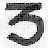

gTum Mo (Che Huo Ding Psychic Heat)
Zhuo
Huo Ding or gTum Mo is one of the Six Doctrines (Six Yogas):
Among the Six Doctrines, gtum-mo
is considered as qi training, while others are considered as religious training.
This method of qi exercise enables one to resist extremely cold temperatures and to improve one's essence of life
and sexual energy.
Note: originally the psychic heat training came for the secret training of Bonism which is an offshoot of the daoism from China proper. Instead of the Sanskrit short A letter, the old Chinese Han character 火 was used.
Chinese Han fire character火
sanskrit A
